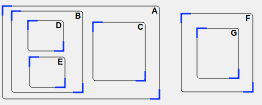
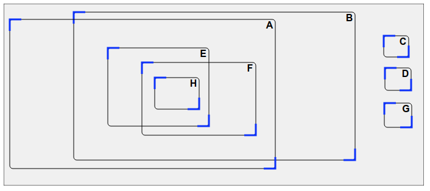

Solution
Il faut placer les rectangles B et C dans le rectangle A.

Remarque : il faut éviter que B soit complètement inclus dans C, ou que C soit complètement inclus dans B.
Dans le rectangle A, il faut placer les rectangles B et C. Puis dans le rectangle B, il faut placer D et E. Par ailleurs, dans le rectangle F, il faut placer G.
Remarque : on peut aussi voir le problème dans l'autre sens. D'une part, il faut placer le rectangle G dans F. D'autre part, il faut placer les rectangles D et E dans B, puis placer les rectangles B et C dans A.
Le rectangle C est facile à placer tout à la fin : il suffit de le placer dans le rectangle A, à l'écart des autres rectangles. Il en va de même des rectangles D et G, qu'on pourra placer tout à la fin dans le rectangle B, à l'écart des autres rectangles.
Concentrons-nous donc sur les rectangles A, B, E, F, et H. Les rectangles E et F doivent se trouver à la fois dans A et B. il faut donc avoir une zone de recouvrement entre ces rectangles, et que E et F soient placés dans cette zone commune.

Il faut ensuite placer le rectangle H, qui doit se trouver à la fois dans E et F. Cela nous oblige à ajuster E et F de sorte à créer une zone de recouvrement entre eux, afin de placer H dans cette zone commune.
On termine en plaçant les rectangles C, D et G, comme expliqué au début.

Remarque : notez qu'il faut éviter de placer A entièrement à l'intérieur de B ou bien le contraire, et de même il faut éviter de placer E entièrement à l'intérieur de F ou bien le contraire.
C'est de l'informatique !
Ce sujet porte sur l'utilisation des graphes pour représenter certaines propriétés d'un système et les étudier. Un graphe est constitué de noeuds reliés par des arcs. Ici les noeuds sont les carrés noirs, qui représentent chacun un rectangle, et les arcs sont les flèches, qui représentent l'information "est à l'intérieur de".
Représenter les relations "est à l'intérieur de" d'un ensemble de rectangles par un graphe, plus précisément par un graphe orienté acyclique, permet d'exploiter des algorithmes classiques sur les graphes pour répondre efficacement à toutes sortes de questions sur les rectangles et leur imbrication, sans avoir à inventer un nouvel algorithme pour chaque question.